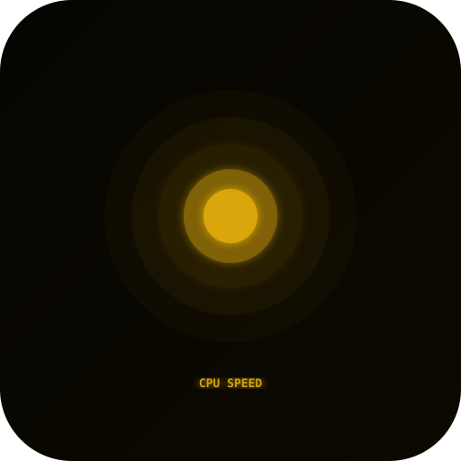
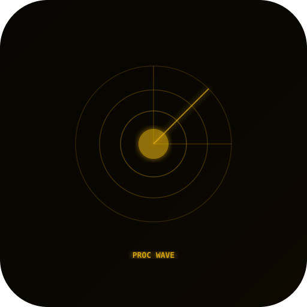
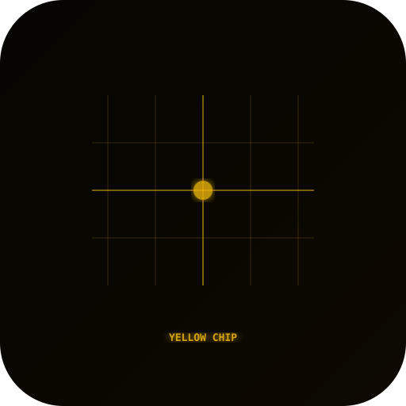
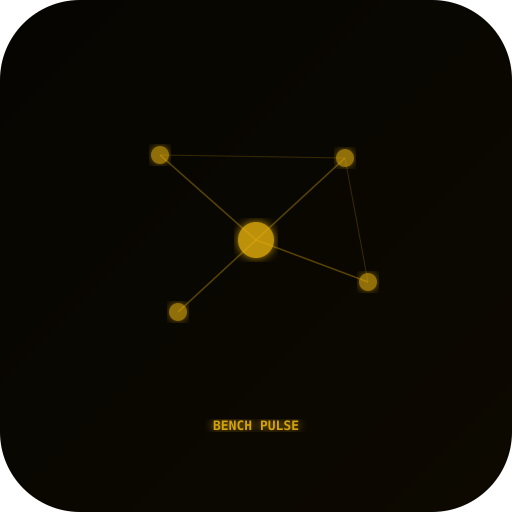
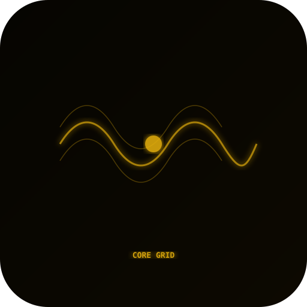
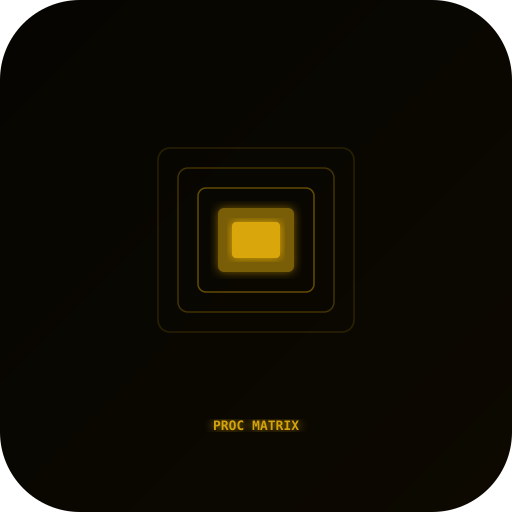
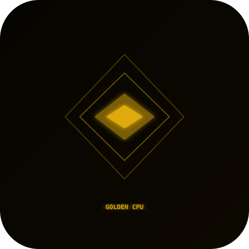
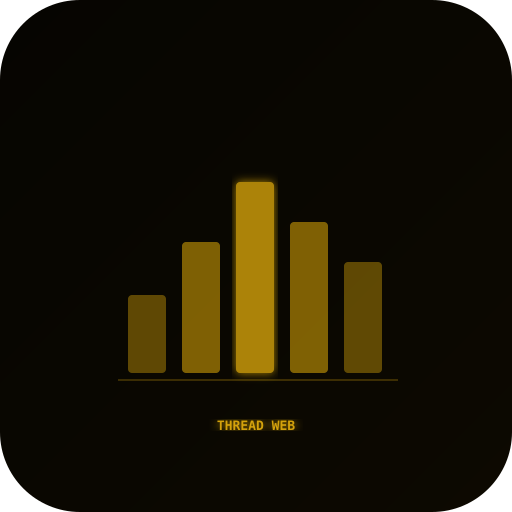
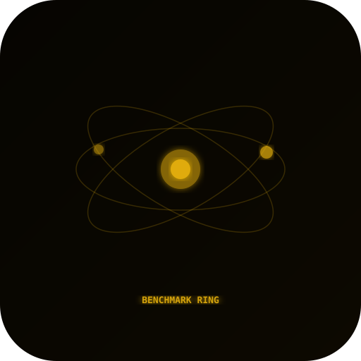

10 candidates

CPU 속도계candidate_01_cpu_speedometer.svg
프로세서 웨이브candidate_02_proc_wave.svg
옐로우 칩candidate_03_yellow_chip.svg
벤치 펄스candidate_04_bench_pulse.svg
코어 그리드candidate_05_core_grid.svg
프로세서 매트릭스candidate_06_proc_matrix.svg
골든 CPUcandidate_07_golden_cpu.svg
스레드 웹candidate_08_thread_web.svg
벤치마크 링candidate_09_benchmark_ring.svg